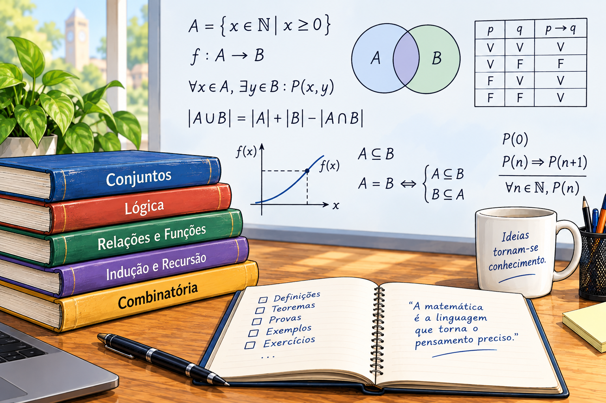
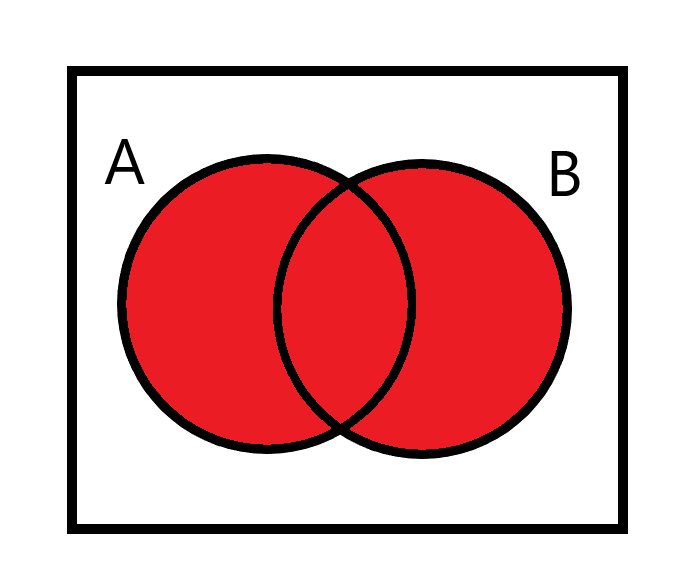
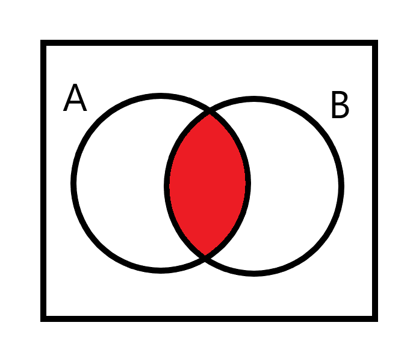
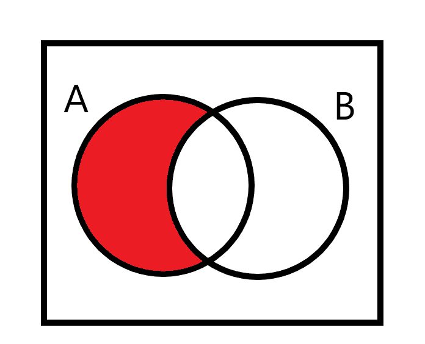
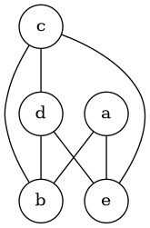
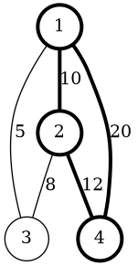
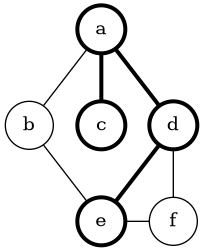
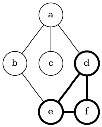
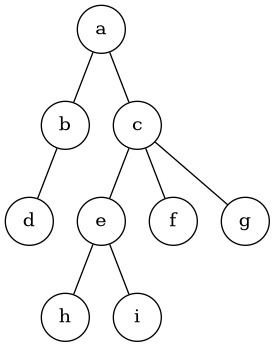
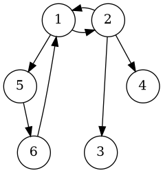

2 Fundamentos Matemáticos

O estudo da Teoria de Linguagens e Autômatos utiliza uma série de conceitos matemáticos que permitem descrever, de maneira precisa e formal, os objetos computacionais e as relações existentes entre eles. Embora muitos desses conceitos sejam elementares e façam parte da formação matemática básica, é importante apresentá-los e estabelecer sua notação antes de iniciar as definições formais da teoria.
Essa formalização é particularmente importante porque, ao longo do estudo, serão utilizados conceitos matemáticos para definir alfabetos, palavras, linguagens, autômatos, funções de transição e relações. Além disso, diversas propriedades dos modelos computacionais serão demonstradas matematicamente. Para que essas definições e demonstrações possam ser compreendidas sem ambiguidades, é necessário estabelecer previamente o significado dos principais objetos e operações matemáticas utilizados.
Entre os conceitos fundamentais, os conjuntos ocupam uma posição central. Praticamente todos os objetos da Teoria de Linguagens podem ser definidos a partir deles ou representados como conjuntos. Um alfabeto, por exemplo, pode ser entendido como um conjunto finito de símbolos, enquanto uma linguagem pode ser definida como um conjunto de palavras. Da mesma forma, os estados de um autômato e suas transições podem ser organizados e manipulados utilizando operações sobre conjuntos.
2.1 Conjuntos
Um conjunto é uma coleção de objetos que são tratados como uma única entidade. Esses objetos são denominados elementos do conjunto. Os elementos podem ser de diferentes naturezas: números, símbolos, palavras, estados de um autômato ou até mesmo outros conjuntos.
Por exemplo, podemos considerar o conjunto formado pelos números 2, 4 e 12:
\[ A = \{2,4,12\} \]
Também é possível definir um conjunto por meio de uma propriedade que caracteriza seus elementos. Essa forma de representação é particularmente útil quando o conjunto possui muitos elementos ou é infinito. Por exemplo, o conjunto dos números pares pode ser definido por:
\[ pares = \{n \mid n = 2m,; m \in \mathbb{N}\} \]
A expressão significa que o conjunto é formado por todos os elementos \(n\) que podem ser escritos como duas vezes algum número natural \(m\).
Para indicar que um elemento pertence a um conjunto, utiliza-se o símbolo \(\in\). Por exemplo:
\[ 7 \in \{1,7,34\} \]
Essa expressão deve ser lida como “7 pertence ao conjunto \({1,7,34}\)”. Quando um elemento não pertence a um conjunto, utiliza-se o símbolo \(\notin\). Assim, podemos escrever:
\[ 5 \notin \{1,7,34\} \]
Essa notação de pertencimento será utilizada frequentemente na Teoria de Linguagens. Por exemplo, quando definirmos um alfabeto \(\Sigma\), poderemos escrever \(a \in \Sigma\) para indicar que o símbolo \(a\) pertence ao alfabeto.
Subconjuntos
Além de analisar a relação entre um elemento e um conjunto, é possível analisar a relação entre dois conjuntos. Dizemos que um conjunto \(A\) é subconjunto de um conjunto \(B\) quando todos os elementos de \(A\) também pertencem a \(B\). Essa relação é representada por:
\[ A \subseteq B \]
Quando, além disso, \(A\) possui menos elementos que \(B\), isto é, existe pelo menos um elemento de \(B\) que não pertence a \(A\), utilizamos a notação:
\[ A \subsetneq B \]
para indicar que \(A\) é um subconjunto próprio de \(B\).
É importante observar que, em um conjunto, a ordem em que os elementos são apresentados não possui significado. Da mesma forma, a repetição de um elemento não altera o conjunto. Assim:
\[ \{1,2,3\} = \{3,2,1\} \]
e
\[ \{1\} = \{1,1\} \]
Quando a quantidade de ocorrências de cada elemento é relevante, não estamos mais trabalhando com conjuntos no sentido tradicional, mas com uma estrutura denominada multiconjunto.
Os conjuntos também podem ser finitos ou infinitos. Um conjunto finito possui uma quantidade limitada de elementos. Já um conjunto infinito possui uma quantidade ilimitada de elementos. Os números naturais, por exemplo, formam um conjunto infinito:
\[ \mathbb{N} = \{0,1,2,3,\ldots\} \]
Da mesma forma, o conjunto dos números inteiros é infinito:
\[ \mathbb{Z} = \{\ldots,-2,-1,0,1,2,\ldots\} \]
A distinção entre conjuntos finitos e infinitos será importante posteriormente, especialmente quando forem discutidas propriedades dos alfabetos, das linguagens e dos diferentes modelos de autômatos.
Operações com Conjuntos
Além das relações de pertencimento e inclusão, os conjuntos podem ser combinados por meio de diferentes operações. Essas operações permitem construir novos conjuntos a partir de conjuntos existentes e serão utilizadas posteriormente na definição e manipulação de linguagens formais.
União

A união de dois conjuntos \(A\) e \(B\) é formada por todos os elementos que pertencem a pelo menos um dos conjuntos. A união é representada pelo símbolo \(\cup\):
\[ A \cup B = \{x \mid x \in A \textrm{ ou } x \in B\} \]
Por exemplo, considerando:
\[ A = \{1,2,3\} \]
e
\[ B = \{3,4,5\} \]
temos:
\[ A \cup B = \{1,2,3,4,5\} \]
Observe que o elemento 3 aparece apenas uma vez no resultado, pois conjuntos não consideram repetições.
A operação de união possui especial importância na Teoria de Linguagens, pois será utilizada posteriormente na definição da união de linguagens e estará diretamente relacionada à operação de união de autômatos.
Interseção

A interseção de dois conjuntos contém os elementos que pertencem simultaneamente aos dois conjuntos. A operação é representada pelo símbolo \(\cap\):
\[ A \cap B = \{x \mid x \in A \textrm{ e } x \in B\} \]
Por exemplo, para:
\[ A = \{1,2,3\} \]
e
\[ B = \{3,4,5\} \]
temos:
\[ A \cap B = \{3\} \]
A interseção permite representar uma condição em que um elemento precisa satisfazer simultaneamente duas propriedades. Esse conceito será importante posteriormente na construção de linguagens que representam condições combinadas.
Diferença

A diferença entre dois conjuntos \(A\) e \(B\) é formada pelos elementos que pertencem a \(A\), mas não pertencem a \(B\). A operação pode ser representada por \(A-B\):
\[ A - B = \{x \mid x \in A \textrm{ e } x \notin B\} \]
Por exemplo:
\[ A = \{1,2,3,4\} \]
e
\[ B = \{3,4,5\} \]
resultam em:
\[ A-B = \{1,2\} \]
A diferença é uma operação útil para expressar a remoção de elementos de um conjunto e será retomada posteriormente em diferentes construções da teoria.
Importância dos conjuntos para a Teoria de Linguagens
Os conceitos apresentados nesta seção constituem uma base para praticamente todas as definições que serão introduzidas posteriormente. Um alfabeto será definido como um conjunto de símbolos; uma palavra será construída a partir de símbolos pertencentes a um alfabeto; e uma linguagem poderá ser definida como um conjunto de palavras.
Da mesma forma, um autômato será descrito por conjuntos de estados, símbolos e transições, além de funções que estabelecem relações entre esses elementos. As operações de união, interseção, diferença e inclusão também serão utilizadas para estabelecer propriedades das linguagens e demonstrar resultados importantes.
Portanto, esta revisão não tem apenas o objetivo de recordar conceitos matemáticos conhecidos. Ela estabelece a linguagem formal que será utilizada ao longo do livro. A partir desses fundamentos, será possível apresentar as definições da Teoria de Linguagens de maneira rigorosa e, posteriormente, utilizar essas definições em demonstrações, construções de autômatos e análise das propriedades das linguagens formais.
2.2 Sequências e Uplas
Enquanto um conjunto é uma coleção de elementos na qual a ordem e a repetição não são relevantes, uma sequência é uma lista de objetos na qual a ordem em que os elementos aparecem é parte fundamental da representação. Assim, em uma sequência, cada elemento ocupa uma determinada posição. Por exemplo, podemos considerar a sequência:
\[ (1,4,20) \]
Nesse caso, o primeiro elemento é \(1\), o segundo é \(4\) e o terceiro é \(20\). A sequência é representada utilizando parênteses, justamente para diferenciá-la da representação usual de conjuntos. A ordem dos elementos produz sequências diferentes. Portanto,
\[ (1,4,20) \neq (4,1,20). \]
Essa característica será particularmente importante no estudo das linguagens formais, pois uma palavra pode ser entendida como uma sequência finita de símbolos pertencentes a um alfabeto. Assim, as sequências fornecem a estrutura matemática necessária para representar a ordem em que os símbolos aparecem em uma palavra.
As sequências podem ser finitas ou infinitas. Uma sequência finita possui uma quantidade determinada de elementos e é denominada tupla. Uma \(k\)-upla é uma sequência constituída por \(k\) elementos. Por exemplo,
\[ (2,1,3) \]
é uma 3-upla, enquanto
\[ (1,2) \]
é uma 2-upla. A posição ocupada por cada elemento é importante: a primeira componente de uma tupla é diferente da segunda, mesmo quando os valores envolvidos são iguais.
Conjunto das partes
É importante observar que conjuntos e sequências podem ser utilizados como elementos de outras estruturas matemáticas. Por exemplo, considere o conjunto:
\[ A=\{0,1\}. \]
O conjunto das partes, ou conjunto potência, de \(A\) é o conjunto formado por todos os subconjuntos de \(A\). Nesse caso, temos:
\[ P(A)=\{\emptyset,\{0\},\{1\},\{0,1\}\}. \]
Esse exemplo mostra que os próprios conjuntos podem aparecer como elementos de outro conjunto. De maneira semelhante, tuplas podem conter conjuntos, sequências ou outros objetos matemáticos como seus componentes. Essa possibilidade será importante quando forem definidas estruturas mais complexas utilizadas na representação de autômatos e de outros modelos computacionais.
Produto cartesiano
Outro conceito fundamental relacionado aos conjuntos e às sequências é o produto cartesiano. Dados dois conjuntos \(A\) e \(B\), o produto cartesiano, denotado por \(A\times B\), é o conjunto formado por todos os pares ordenados \((a,b)\) nos quais \(a\in A\) e \(b\in B\).
Por exemplo, sejam:
\[ A=\{1,2\} \]
e
\[ B=\{x,y,z\}. \]
O produto cartesiano desses conjuntos é:
\[ A\times B= \{(1,x),(1,y),(1,z),(2,x),(2,y),(2,z)\}. \]
Cada elemento do produto cartesiano é, portanto, uma 2-upla, ou par ordenado. Observe novamente que a ordem é importante. Em geral,
\[ (a,b)\neq(b,a), \]
pois a primeira componente pertence a \(A\) e a segunda pertence a \(B\).
O produto cartesiano pode ser estendido para mais de dois conjuntos. Dados os conjuntos \(A_1,A_2,\ldots,A_k\), podemos definir:
\[ A_1\times A_2\times\cdots\times A_k \]
como o conjunto formado por todas as \(k\)-uplas
\[ (a_1,a_2,\ldots,a_k), \]
nas quais cada componente pertence ao respectivo conjunto:
\[ a_i\in A_i. \]
Essa definição permite representar matematicamente estruturas que possuem diferentes componentes organizados em posições específicas.
Quando todos os conjuntos envolvidos no produto cartesiano são iguais, podemos utilizar uma notação abreviada. O produto cartesiano de \(A\) por ele mesmo \(k\) vezes é representado por:
\[ \underbrace{A\times A\times\cdots\times A}_{k\text{ vezes}} =A^k. \]
Por exemplo:
\[ \mathbb{N}^2=\mathbb{N}\times\mathbb{N} \]
representa o conjunto de todos os pares ordenados de números naturais. Assim:
\[ \mathbb{N}^2= \{(0,0),(0,1),(0,2),\ldots,(1,0),(1,1),\ldots\}. \]
O conceito de produto cartesiano será utilizado posteriormente para formalizar diversas estruturas da Teoria de Linguagens. Em particular, ele permite definir conjuntos de tuplas e estabelecer relações entre diferentes conjuntos de objetos. Dessa forma, sequências, tuplas e produtos cartesianos complementam os conceitos de conjuntos apresentados anteriormente e fornecem uma base matemática para a definição formal de alfabetos, palavras, linguagens e autômatos.
2.3 Funções e Relações
Funções e relações são conceitos fundamentais da Matemática Discreta e aparecem de maneira recorrente na definição dos objetos estudados em Teoria de Linguagens. Autômatos, gramáticas e linguagens formais são definidos a partir de conjuntos e operações entre seus elementos. Para compreender adequadamente essas definições, é importante conhecer como funções e relações permitem representar transformações, propriedades e comparações entre objetos.
Funções
Uma função é uma regra que associa elementos de um conjunto de entrada a elementos de um conjunto de saída. Formalmente, uma função \(f\) de um conjunto \(D\) em um conjunto \(C\) é representada por
\[ f:D\rightarrow C. \]
O conjunto \(D\) é denominado domínio da função e o conjunto \(C\) é denominado contradomínio. Para cada elemento \(a\in D\), a função associa exatamente um elemento \(b\in C\). Essa associação é indicada por
\[ f(a)=b. \]
A exigência de que cada elemento do domínio esteja associado a exatamente um elemento do contradomínio é o que diferencia uma função de uma relação arbitrária. Um mesmo elemento do contradomínio pode ser associado a vários elementos do domínio; portanto, não é necessário que elementos diferentes do domínio tenham imagens diferentes.
Uma função também pode ser denominada mapeamento, pois estabelece uma correspondência entre elementos de dois conjuntos. Por exemplo, considere a função
\[ add:\mathbb{Z}\times\mathbb{Z}\rightarrow\mathbb{Z}, \]
definida por
\[ add(x,y)=x+y. \]
Nesse caso, o domínio é o produto cartesiano \(\mathbb{Z}\times\mathbb{Z}\), o contradomínio é \(\mathbb{Z}\) e a função possui dois argumentos. Assim, a entrada da função é um par ordenado \((x,y)\).
De maneira geral, uma função pode possuir qualquer número finito de argumentos. Uma função
\[ f:A_1\times A_2\times\cdots\times A_k\rightarrow B \]
recebe como entrada uma \(k\)-upla
\[ (a_1,a_2,\ldots,a_k), \]
em que cada \(a_i\) pertence ao conjunto correspondente \(A_i\). Uma função com um argumento é denominada função unária, enquanto uma função com dois argumentos é denominada função binária. Essa terminologia será utilizada diversas vezes ao longo do estudo de linguagens formais.
Uma função pode ser representada de diferentes maneiras. Podemos utilizar uma expressão matemática, uma tabela, um diagrama ou até mesmo um algoritmo ou programa de computador. Considere, por exemplo, a função
\[ f:\mathbb{Z}_5\rightarrow\mathbb{Z}_5 \]
definida por
\[ f(x)=(x+1)\bmod 5. \]
Como \(\mathbb{Z}_5={0,1,2,3,4}\), podemos representar essa função pela tabela:
| \(x\) | 0 | 1 | 2 | 3 | 4 |
|---|---|---|---|---|---|
| \(f(x)\) | 1 | 2 | 3 | 4 | 0 |
Observe que cada elemento do domínio possui exatamente uma imagem. Assim, \(f(0)=1\), \(f(1)=2\), \(f(2)=3\), \(f(3)=4\) e \(f(4)=0\). O uso da operação módulo faz com que, depois do valor \(4\), o resultado volte para \(0\).
Essa forma de representar funções é particularmente útil em Computação. Uma tabela de transição de um autômato, por exemplo, pode ser entendida como uma representação tabular de uma função. Essa observação permite estabelecer uma conexão direta entre o conceito matemático de função e a definição formal dos autômatos.
Predicados
Outro conceito importante relacionado às funções é o de predicado. Um predicado, também denominado propriedade, é uma função cujo contradomínio possui dois valores possíveis, normalmente representados por verdadeiro e falso.
Um exemplo simples é o predicado que determina se um número inteiro é par. Podemos defini-lo como
\[ par:\mathbb{Z}\rightarrow\{\text{verdadeiro},\text{falso}\}, \]
em que
\[ par(x)= \begin{cases} \text{verdadeiro}, & \text{se }x\bmod 2=0,\\ \text{falso}, & \text{caso contrário}. \end{cases} \]
Assim, \(par(4)\) é verdadeiro, enquanto \(par(5)\) é falso.
Os predicados são particularmente importantes em Teoria de Linguagens porque uma linguagem pode ser interpretada como uma propriedade sobre as cadeias de um alfabeto. Seja
\[ L\subseteq\Sigma^* \]
uma linguagem. Podemos definir o predicado
\[ P_L:\Sigma^*\rightarrow\{\text{verdadeiro},\text{falso}\} \]
por
\[ P_L(w)= \begin{cases} \text{verdadeiro}, & \text{se }w\in L,\\ \text{falso}, & \text{se }w\notin L. \end{cases} \]
Nesse caso, o predicado \(P_L\) responde à pergunta fundamental: a cadeia \(w\) pertence à linguagem \(L\)?
Essa interpretação permite compreender o papel de um reconhecedor de linguagens. Um autômato recebe uma cadeia como entrada e produz, ao final do processamento, uma resposta que pode ser interpretada como verdadeiro ou falso. Se a cadeia é aceita, o predicado correspondente assume o valor verdadeiro; caso contrário, assume o valor falso.
Relações de equivalência
Uma relação binária \(R\) definida sobre um conjunto \(A\) é denominada relação de equivalência quando satisfaz três propriedades: reflexividade, simetria e transitividade.
A reflexividade estabelece que todo elemento está relacionado consigo mesmo. Formalmente,
\[ \forall x\in A,\quad xRx. \]
A simetria estabelece que, se um elemento está relacionado a outro, então o segundo também está relacionado ao primeiro:
\[ \forall x,y\in A,\quad xRy\Rightarrow yRx. \]
Finalmente, a transitividade estabelece que, se um elemento está relacionado a um segundo e este está relacionado a um terceiro, então o primeiro está relacionado ao terceiro:
\[ \forall x,y,z\in A,\quad (xRy\land yRz)\Rightarrow xRz. \]
A igualdade entre números é um exemplo conhecido de relação de equivalência. Se \(x=y\), então naturalmente \(x=x\), \(y=x\) e, se \(x=y\) e \(y=z\), então \(x=z\).
Outro exemplo é a relação de congruência módulo \(n\). Dois inteiros \(x\) e \(y\) são considerados equivalentes módulo \(n\) quando possuem o mesmo resto na divisão por \(n\). Essa relação permite agrupar infinitos números inteiros em um número finito de classes.
A ideia de agrupar elementos equivalentes é extremamente importante em Computação. Em vez de considerar individualmente todos os elementos de um conjunto, podemos trabalhar com as classes de equivalência formadas pela relação.
Funções, predicados e relações: uma visão integrada
Os conceitos apresentados nesta seção aparecem de forma integrada em praticamente toda a Teoria de Linguagens. As funções são utilizadas para descrever transformações e comportamentos determinísticos; os predicados permitem expressar propriedades que podem ser verdadeiras ou falsas; e as relações permitem estabelecer associações ou comparações entre objetos.
2.4 Grafos
Grafos são estruturas matemáticas utilizadas para representar relações entre objetos. Um grafo pode ser utilizado, por exemplo, para representar cidades conectadas por estradas, páginas da Web conectadas por links, pessoas conectadas por relações sociais ou estados de um autômato conectados por transições. Na Teoria de Linguagens, os grafos possuem papel particularmente importante, pois permitem representar visualmente autômatos, relações entre estados, árvores de derivação e diversas outras estruturas.
De maneira intuitiva, um grafo é formado por um conjunto de vértices, também chamados de nós, e por conexões entre esses vértices, denominadas arestas. Dependendo do tipo de grafo, as conexões podem possuir ou não uma direção, podem possuir rótulos e podem ainda estar associadas a pesos ou outros atributos.
Grafos não direcionados
Um grafo não direcionado, ou simplesmente grafo, é uma estrutura formada por um conjunto de vértices e um conjunto de arestas que conectam pares de vértices. Em um grafo não direcionado, uma aresta que conecta os vértices \(a\) e \(b\) não possui uma direção específica. Assim, a conexão entre \(a\) e \(b\) é a mesma que a conexão entre \(b\) e \(a\).
Formalmente, um grafo pode ser representado pelo par
\[ G=(V,E), \]
em que \(V\) é o conjunto de vértices e \(E\) é o conjunto de arestas.
No caso de um grafo simples não direcionado, cada aresta é representada por um par não ordenado de vértices. Assim,
\[ \{a,b\} \]
representa uma aresta que conecta os vértices \(a\) e \(b\). A ordem dos elementos não é relevante, de modo que
\[ \{a,b\}=\{b,a\}. \]
Por exemplo, considere o grafo da

\[ G=(V,E), \]
em que
\[ V=\{a,b,c,d,e\} \]
e
\[ E= \{ \{a,b\}, \{a,e\}, \{b,c\}, \{b,d\}, \{c,d\}, \{c,e\}, \{d,e\} \}. \]
Nesse grafo, os cinco elementos de \(V\) são os vértices e cada elemento de \(E\) representa uma conexão entre dois desses vértices.
Uma representação gráfica desse grafo pode ser feita desenhando um ponto para cada vértice e uma linha para cada aresta, conforme ilustrado na Figura fig-grafo1. A representação visual é particularmente útil porque permite identificar propriedades do grafo sem necessariamente manipular sua representação matemática.
Grau de um vértice
O grau de um vértice de um grafo não direcionado corresponde ao número de arestas incidentes nesse vértice. Em outras palavras, indica quantas conexões estão associadas ao vértice.
No grafo da Figura fig-grafo1, por exemplo, o vértice \(a\) possui grau \(2\), pois está conectado aos vértices \(b\) e \(e\). Já o vértice \(d\) possui grau \(3\), pois está conectado aos vértices \(b\), \(c\) e \(e\).
O grau de um vértice pode ser representado por
\[ \deg(v). \]
Assim, no exemplo,
\[ \deg(a)=2 \]
e
\[ \deg(d)=3. \]
O conceito de grau é útil para caracterizar a estrutura de um grafo e também aparece, com adaptações, no estudo de grafos direcionados.
Grafos simples
Um grafo simples é um grafo que não possui arestas múltiplas entre o mesmo par de vértices e não possui arestas que conectem um vértice a ele próprio.
Uma aresta que conecta um vértice a ele mesmo é denominada laço. Por exemplo, uma aresta
\[ \{a,a\} \]
seria um laço no vértice \(a\).
Da mesma forma, não são permitidas duas arestas distintas conectando exatamente os mesmos dois vértices. Quando múltiplas arestas entre os mesmos vértices são permitidas, temos estruturas mais gerais, denominadas multigrafos.
A distinção entre grafos simples e grafos que permitem múltiplas arestas ou laços é importante porque diferentes aplicações exigem diferentes modelos. Em Teoria de Linguagens, por exemplo, os diagramas de autômatos podem possuir várias transições entre estados e, portanto, sua representação não precisa necessariamente ser um grafo simples.
Grafos como modelos
Uma das principais aplicações dos grafos é a modelagem de sistemas. Os vértices representam entidades e as arestas representam relações ou conexões entre essas entidades.

Por exemplo, podemos utilizar um grafo para representar uma rede de cidades, conforme ilustrado na Figura fig-grafo3. Nesse caso, cada vértice representa uma cidade e cada aresta representa uma estrada que conecta duas cidades. Outro exemplo é uma rede de páginas da Web, em que cada vértice representa uma página e cada conexão representa um link entre páginas.
As arestas também podem possuir rótulos. Nesse caso, além de indicar que dois vértices estão relacionados, a aresta pode especificar a natureza dessa relação. Essa característica é especialmente importante em Teoria de Linguagens, pois as transições de um autômato são normalmente rotuladas com símbolos do alfabeto.
Assim, uma estrutura gráfica pode representar não apenas a existência de uma conexão, mas também a informação associada a essa conexão.
Subgrafos
Um grafo pode conter dentro de sua estrutura outros grafos menores. Um subgrafo de um grafo \(H\) é um grafo formado por um subconjunto dos vértices de \(H\) e por arestas de \(H\) que conectam esses vértices.
Se
\[ H=(V_H,E_H), \]
um subgrafo \(G=(V_G,E_G)\) de \(H\) deve satisfazer
\[ V_G\subseteq V_H \]
e
\[ E_G\subseteq E_H. \]
Por exemplo, se selecionarmos os vértices \(1\), \(2\) e \(4\) do grafo da Figura fig-grafo3 e mantivermos as arestas existentes entre esses vértices, obteremos um subgrafo do grafo original.
O conceito de subgrafo é útil quando estamos interessados apenas em uma parte de uma estrutura maior. Em aplicações computacionais, isso permite analisar regiões específicas de uma rede ou de um sistema sem considerar todos os seus elementos.
Caminhos
Um dos conceitos mais importantes em grafos é o de caminho. Intuitivamente, um caminho é uma sequência de vértices em que cada vértice consecutivo está conectado por uma aresta.
Por exemplo, na Figura fig-grafo4

\[ (c,a,d,e) \]
representa um caminho quando existem as arestas
\[ \{c,a\},\quad \{a,d\},\quad \{d,e\}. \]
Um caminho pode visitar um mesmo vértice mais de uma vez. Quando nenhum vértice é repetido, temos um caminho simples.
O comprimento de um caminho corresponde ao número de arestas percorridas. Assim, o caminho
\[ (a,c,d,e) \]
possui comprimento \(3\), pois utiliza as arestas que conectam \(a\) a \(c\), \(c\) a \(d\) e \(d\) a \(e\).
A noção de caminho é fundamental para diversas operações sobre grafos. Ela permite, por exemplo, verificar se existe uma conexão entre dois vértices, determinar rotas e estudar propriedades de conectividade.
Ciclos
Um ciclo é um caminho que começa e termina no mesmo vértice. Por exemplo, conforme ilustrado na Figura fig-grafo5

\[ (d,e,f,d) \]
é um ciclo quando existem as arestas
\[ \{d,e\},\quad \{e,f\},\quad \{f,d\}. \]
Um ciclo simples não repete vértices, exceto pelo primeiro e pelo último, que são iguais.
Os ciclos são importantes porque permitem identificar situações em que é possível retornar ao ponto de partida seguindo as conexões do grafo. Essa propriedade terá uma interpretação particularmente importante quando estudarmos autômatos, pois um ciclo em um autômato pode representar a possibilidade de processar uma quantidade arbitrária de símbolos repetindo uma determinada sequência de estados.
Conectividade
Um grafo é denominado conexo quando existe um caminho entre quaisquer dois de seus vértices.
Considere dois vértices \(u\) e \(v\). Se existe um caminho que começa em \(u\) e termina em \(v\), dizemos que esses vértices estão conectados.
Um grafo desconexo possui pelo menos dois grupos de vértices que não podem ser alcançados uns a partir dos outros. Esses grupos são denominados componentes conexas do grafo.
A conectividade é uma propriedade importante em diversas aplicações. Em uma rede de comunicação, por exemplo, um grafo conexo representa uma rede em que existe alguma sequência de conexões entre quaisquer dois pontos.
Árvores
Uma árvore é um grafo não direcionado, conexo e sem ciclos, conforme ilustrado na Figura fig-grafo6

Portanto, uma árvore possui duas características fundamentais: existe um caminho entre quaisquer dois vértices e não existe um caminho que permita sair de um vértice e retornar a ele seguindo um ciclo.
Uma propriedade importante das árvores é que, entre quaisquer dois vértices, existe exatamente um caminho simples.
Se uma árvore possui \(n\) vértices, então ela possui exatamente
\[ n-1 \]
arestas.
As árvores aparecem frequentemente na Computação. Estruturas hierárquicas, sistemas de arquivos, árvores de busca e árvores de derivação de gramáticas são alguns exemplos.
Na Teoria de Linguagens, as árvores de derivação são utilizadas para representar como uma cadeia pode ser gerada a partir do símbolo inicial de uma gramática. Nesse caso, os nós da árvore representam símbolos da gramática e a estrutura da árvore representa a sequência de aplicações das produções.
Essa aplicação será particularmente importante no estudo de gramáticas livres de contexto, em que a existência de diferentes árvores de derivação para uma mesma cadeia pode indicar ambiguidade da gramática.
Grafos direcionados
Em muitas aplicações, a existência de uma conexão entre dois objetos não é suficiente; é necessário também indicar a direção da conexão. Nesse caso, utilizamos um grafo direcionado, também chamado de digrafo, conforme ilustrado na Figura fig-grafo7

Em um grafo direcionado, uma aresta é denominada arco e possui uma origem e um destino. Um arco que parte de \(u\) e chega a \(v\) é representado pelo par ordenado
\[ (u,v). \]
Observe que, ao contrário dos pares não ordenados utilizados nos grafos não direcionados,
\[ (u,v)\neq(v,u) \]
em geral.
Formalmente, um grafo direcionado pode ser representado por
\[ G=(V,E), \]
em que
\[ E\subseteq V\times V. \]
Nesse caso, cada elemento de \(E\) é um par ordenado de vértices.
A direção dos arcos permite representar relações assimétricas. Por exemplo, em uma rede de páginas da Web, uma página pode possuir um link para outra sem que a segunda possua necessariamente um link de volta para a primeira.
Grau de entrada e grau de saída
Em um grafo direcionado, é necessário distinguir as arestas que chegam a um vértice daquelas que saem dele.
O grau de entrada de um vértice \(v\), representado por
\[ \deg^-(v), \]
é o número de arcos que chegam a \(v\).
O grau de saída, representado por
\[ \deg^+(v), \]
é o número de arcos que partem de \(v\).
Essa distinção é fundamental no estudo dos autômatos. Um estado pode possuir várias transições de saída e várias transições de entrada. Em um AFD, por exemplo, para cada estado e símbolo do alfabeto existe exatamente uma transição correspondente.
Caminhos direcionados
Em um grafo direcionado, um caminho direcionado é uma sequência de vértices na qual cada arco é percorrido respeitando sua direção.
Considere, por exemplo, os arcos
\[ (a,b),\quad (b,c),\quad (c,d). \]
Nesse caso,
\[ (a,b,c,d) \]
é um caminho direcionado.
Entretanto, se o arco disponível for \((b,a)\) em vez de \((a,b)\), não será possível percorrer esse arco de \(a\) para \(b\). Essa característica diferencia fundamentalmente os caminhos em grafos direcionados daqueles existentes em grafos não direcionados.
Em um autômato, o processamento de uma cadeia pode ser interpretado como um caminho direcionado no grafo de estados. Cada símbolo lido determina qual transição deve ser percorrida.
Conectividade forte
Um grafo direcionado é fortemente conexo quando, para quaisquer dois vértices \(u\) e \(v\), existe um caminho direcionado de \(u\) para \(v\) e também um caminho direcionado de \(v\) para \(u\).
A conectividade forte é uma propriedade mais restritiva que a conectividade de um grafo não direcionado, pois exige que os caminhos possam ser percorridos respeitando as direções dos arcos.
As componentes fortemente conexas de um grafo direcionado são subconjuntos máximos de vértices nos quais todos os vértices são mutuamente alcançáveis por caminhos direcionados. Esse conceito possui aplicações em análise de programas, redes, compiladores e algoritmos sobre grafos.
Grafos e relações
Existe uma conexão direta entre grafos direcionados e relações binárias. Seja \(D\) um conjunto e seja
\[ R\subseteq D\times D \]
uma relação binária sobre \(D\).
Podemos construir um grafo direcionado
\[ G=(D,E), \]
definindo
\[ E=\{(x,y)\mid xRy\}. \]
Nesse grafo, cada elemento de \(D\) corresponde a um vértice e cada par \((x,y)\) pertencente à relação corresponde a um arco de \(x\) para \(y\).
Essa correspondência permite representar relações matemáticas graficamente.
Por exemplo, considere a relação
\[ R=\{(x,y)\in\mathbb{Z}\times\mathbb{Z}\mid x<y\}. \]
Podemos interpretar essa relação como um grafo direcionado em que existe um arco de \(x\) para \(y\) sempre que \(x<y\).
Essa conexão entre relações e grafos é importante porque permite utilizar propriedades gráficas para analisar relações matemáticas. Da mesma forma, propriedades de relações, como reflexividade, simetria e transitividade, podem ser interpretadas em termos da estrutura do grafo correspondente.
2.5 Lógica Booleana
A Lógica Booleana é um sistema matemático utilizado para representar e manipular informações que podem assumir dois valores distintos. Esses valores são normalmente denominados verdadeiro e falso e podem ser representados, respectivamente, pelos valores \(1\) e \(0\).
A lógica booleana está presente em diversas áreas da Computação. Ela é utilizada na construção de circuitos digitais, na representação de condições em programas, na consulta a bancos de dados, na definição de propriedades matemáticas e na descrição de decisões tomadas por sistemas computacionais.
O conjunto de valores booleanos pode ser representado por
\[ \mathbb{B}=\{0,1\}, \]
em que \(0\) representa falso e \(1\) representa verdadeiro.
Uma expressão construída a partir de variáveis booleanas e operadores lógicos é denominada expressão booleana. Por exemplo,
\[ P\wedge Q \]
é uma expressão booleana formada pelas variáveis \(P\) e \(Q\) e pelo operador de conjunção.
Proposições
Uma proposição é uma afirmação que pode ser classificada como verdadeira ou falsa, mas não pode assumir simultaneamente os dois valores.
Por exemplo, a afirmação
\(2+3=5\)
é uma proposição verdadeira, enquanto
\(2+3=6\)
é uma proposição falsa.
Podemos representar proposições por letras, como \(P\), \(Q\) e \(R\). Assim, podemos escrever
\[ P=1 \]
para indicar que a proposição \(P\) é verdadeira, ou
\[ P=0 \]
para indicar que \(P\) é falsa.
É importante distinguir uma proposição de uma expressão que contém variáveis não determinadas. Por exemplo,
\[ x>5 \]
não possui um valor lógico definido enquanto o valor de \(x\) não for conhecido. Entretanto, uma vez determinado \(x\), a expressão poderá ser avaliada como verdadeira ou falsa.
Operações lógicas
As proposições podem ser combinadas utilizando operadores lógicos. Os operadores básicos são a negação, a conjunção e a disjunção. Outros operadores, como o ou-exclusivo, a implicação e a equivalência, podem ser definidos a partir desses operadores.
Negação
A negação, representada pelo símbolo \(\neg\), inverte o valor lógico de uma proposição.
A tabela-verdade da negação é
| \(P\) | \(\neg P\) |
|---|---|
| \(0\) | \(1\) |
| \(1\) | \(0\) |
Assim, se \(P\) é verdadeira, então \(\neg P\) é falsa. Da mesma forma, se \(P\) é falsa, então \(\neg P\) é verdadeira.
Podemos representar a operação por
\[ \neg 0=1 \]
e
\[ \neg 1=0. \]
Conjunção
A conjunção, representada por \(\wedge\), corresponde ao operador lógico E. A expressão
\[ P\wedge Q \]
é verdadeira somente quando \(P\) e \(Q\) são simultaneamente verdadeiras.
Sua tabela-verdade é
| \(P\) | \(Q\) | \(P\wedge Q\) |
|---|---|---|
| \(0\) | \(0\) | \(0\) |
| \(0\) | \(1\) | \(0\) |
| \(1\) | \(0\) | \(0\) |
| \(1\) | \(1\) | \(1\) |
Por exemplo, considere as proposições:
\[ P=\text{``10 é maior que 5''} \]
e
\[ Q=\text{``10 é par''}. \]
As duas proposições são verdadeiras. Portanto,
\[ P\wedge Q=1. \]
A conjunção exige que todas as proposições envolvidas sejam verdadeiras.
Disjunção
A disjunção, representada por \(\vee\), corresponde ao operador lógico OU. A expressão
\[ P\vee Q \]
é verdadeira quando pelo menos uma das proposições é verdadeira.
Sua tabela-verdade é
| \(P\) | \(Q\) | \(P\vee Q\) |
|---|---|---|
| \(0\) | \(0\) | \(0\) |
| \(0\) | \(1\) | \(1\) |
| \(1\) | \(0\) | \(1\) |
| \(1\) | \(1\) | \(1\) |
Portanto,
\[ 0\vee0=0, \]
enquanto
\[ 0\vee1=1, \]
\[ 1\vee0=1 \]
e
\[ 1\vee1=1. \]
Na lógica booleana, o operador \(\vee\) corresponde ao OU inclusivo, pois o resultado também é verdadeiro quando ambas as proposições são verdadeiras.
Ou-exclusivo
O ou-exclusivo, representado por \(\oplus\), é verdadeiro quando exatamente uma das duas proposições é verdadeira.
Sua tabela-verdade é
| \(P\) | \(Q\) | \(P\oplus Q\) |
|---|---|---|
| \(0\) | \(0\) | \(0\) |
| \(0\) | \(1\) | \(1\) |
| \(1\) | \(0\) | \(1\) |
| \(1\) | \(1\) | \(0\) |
Assim,
\[ P\oplus Q \]
é verdadeiro quando \(P\) e \(Q\) possuem valores diferentes.
Uma forma de expressar o ou-exclusivo utilizando outros operadores é
\[ P\oplus Q \equiv (P\vee Q)\wedge\neg(P\wedge Q). \]
Outra representação equivalente é
\[ P\oplus Q \equiv \neg(P\leftrightarrow Q). \]
Implicação
A implicação, representada por \(\rightarrow\), é utilizada para expressar uma condição do tipo “se… então…”.
A expressão
\[ P\rightarrow Q \]
é lida como:
Se \(P\), então \(Q\).
Sua tabela-verdade é
| \(P\) | \(Q\) | \(P\rightarrow Q\) |
|---|---|---|
| \(0\) | \(0\) | \(1\) |
| \(0\) | \(1\) | \(1\) |
| \(1\) | \(0\) | \(0\) |
| \(1\) | \(1\) | \(1\) |
Observe que a implicação é falsa somente quando \(P\) é verdadeira e \(Q\) é falsa.
Uma propriedade importante é que a implicação pode ser expressa utilizando apenas a negação e a disjunção:
\[ P\rightarrow Q \equiv \neg P\vee Q. \]
Também pode ser expressa utilizando apenas a negação e a conjunção:
\[ P\rightarrow Q \equiv \neg(P\wedge\neg Q). \]
Essa equivalência é útil porque mostra que a implicação não precisa necessariamente ser considerada um operador lógico básico.
Equivalência lógica
A equivalência lógica, representada por \(\leftrightarrow\), estabelece que duas proposições possuem o mesmo valor lógico.
A expressão
\[ P\leftrightarrow Q \]
é verdadeira quando \(P\) e \(Q\) possuem o mesmo valor.
Sua tabela-verdade é
| \(P\) | \(Q\) | \(P\leftrightarrow Q\) |
|---|---|---|
| \(0\) | \(0\) | \(1\) |
| \(0\) | \(1\) | \(0\) |
| \(1\) | \(0\) | \(0\) |
| \(1\) | \(1\) | \(1\) |
A equivalência lógica pode ser expressa por duas implicações:
\[ P\leftrightarrow Q \equiv (P\rightarrow Q)\wedge(Q\rightarrow P). \]
Também podemos escrevê-la como
\[ P\leftrightarrow Q \equiv (P\wedge Q)\vee(\neg P\wedge\neg Q). \]
Essa última expressão evidencia que \(P\leftrightarrow Q\) é verdadeira quando ambas são verdadeiras ou quando ambas são falsas.
Expressões booleanas
Operadores lógicos podem ser combinados para formar expressões mais complexas. Por exemplo,
\[ (P\wedge Q)\vee\neg R \]
é uma expressão booleana formada pelas variáveis \(P\), \(Q\) e \(R\).
O valor da expressão depende dos valores atribuídos às variáveis. Para determinar o resultado de uma expressão, podemos construir uma tabela-verdade contendo todas as combinações possíveis de valores das variáveis.
Se uma expressão possui \(n\) variáveis booleanas, existem
\[ 2^n \]
possíveis combinações de valores.
Por exemplo, uma expressão com três variáveis \(P\), \(Q\) e \(R\) possui
\[ 2^3=8 \]
combinações possíveis.
Uma tabela-verdade completa permite determinar o resultado de uma expressão para cada uma dessas combinações.
Tabelas-verdade
Considere a expressão
\[ P\wedge(Q\vee R). \]
Para construir sua tabela-verdade, começamos listando todas as combinações possíveis de \(P\), \(Q\) e \(R\):
| \(P\) | \(Q\) | \(R\) | \(Q\vee R\) | \(P\wedge(Q\vee R)\) |
|---|---|---|---|---|
| 0 | 0 | 0 | 0 | 0 |
| 0 | 0 | 1 | 1 | 0 |
| 0 | 1 | 0 | 1 | 0 |
| 0 | 1 | 1 | 1 | 0 |
| 1 | 0 | 0 | 0 | 0 |
| 1 | 0 | 1 | 1 | 1 |
| 1 | 1 | 0 | 1 | 1 |
| 1 | 1 | 1 | 1 | 1 |
A tabela-verdade permite verificar propriedades das expressões booleanas de maneira sistemática.
Ela também fornece um método para verificar se duas expressões são logicamente equivalentes. Basta construir as respectivas tabelas-verdade e comparar suas colunas finais.
Tautologias e contradições
Uma expressão booleana é uma tautologia quando seu resultado é verdadeiro para todas as possíveis atribuições de valores às suas variáveis.
Um exemplo é
\[ P\vee\neg P. \]
Independentemente do valor de \(P\), uma das duas partes será verdadeira. Portanto,
\[ P\vee\neg P\equiv1. \]
Uma expressão é uma contradição quando seu resultado é falso para todas as possíveis atribuições.
Um exemplo é
\[ P\wedge\neg P. \]
Nesse caso,
\[ P\wedge\neg P\equiv0. \]
Também podemos ter expressões que são verdadeiras para algumas atribuições e falsas para outras. Essas expressões são denominadas contingências.
Portanto, uma expressão booleana pode ser classificada, de acordo com seu comportamento, como tautologia, contradição ou contingência.
Equivalências booleanas
Duas expressões booleanas são logicamente equivalentes quando produzem o mesmo resultado para todas as possíveis atribuições de valores às suas variáveis.
Podemos representar essa equivalência por
\[ P\equiv Q. \]
Por exemplo,
\[ P\rightarrow Q \equiv \neg P\vee Q. \]
As duas expressões possuem o mesmo valor para todas as combinações de \(P\) e \(Q\).
As equivalências lógicas permitem transformar expressões sem alterar seu significado lógico. Essa propriedade é muito útil para simplificar expressões e demonstrar propriedades de sistemas que utilizam lógica booleana.
Leis de De Morgan
Entre as equivalências mais importantes da lógica booleana estão as Leis de De Morgan:
\[ \neg(P\wedge Q) \equiv \neg P\vee\neg Q \]
e
\[ \neg(P\vee Q) \equiv \neg P\wedge\neg Q. \]
A primeira afirma que negar uma conjunção equivale a realizar a disjunção das negações. A segunda afirma que negar uma disjunção equivale a realizar a conjunção das negações.
Essas leis podem ser verificadas diretamente por meio de tabelas-verdade.
Por exemplo:
| \(P\) | \(Q\) | \(\neg(P\wedge Q)\) | \(\neg P\vee\neg Q\) |
|---|---|---|---|
| 0 | 0 | 1 | 1 |
| 0 | 1 | 1 | 1 |
| 1 | 0 | 1 | 1 |
| 1 | 1 | 0 | 0 |
As duas últimas colunas são iguais, confirmando a equivalência.
Leis distributivas
A lógica booleana possui também leis distributivas. Para a conjunção e a disjunção temos
\[ P\wedge(Q\vee R) \equiv (P\wedge Q)\vee(P\wedge R) \]
e
\[ P\vee(Q\wedge R) \equiv (P\vee Q)\wedge(P\vee R). \]
Essas expressões possuem uma estrutura semelhante às leis distributivas conhecidas da aritmética. Entretanto, é importante observar que a álgebra booleana não é simplesmente a aritmética com os valores \(0\) e \(1\).
Na aritmética usual,
\[ a(b+c)=ab+ac, \]
enquanto na lógica booleana os operadores envolvidos são \(\wedge\) e \(\vee\).
A existência das duas leis distributivas é uma das diferenças interessantes entre a álgebra booleana e a álgebra aritmética tradicional.
Outras leis importantes
Diversas outras equivalências podem ser utilizadas para manipular expressões booleanas. Entre elas estão as leis de identidade:
\[ P\wedge1\equiv P \]
e
\[ P\vee0\equiv P. \]
As leis de dominação são
\[ P\vee1\equiv1 \]
e
\[ P\wedge0\equiv0. \]
As leis de idempotência são
\[ P\vee P\equiv P \]
e
\[ P\wedge P\equiv P. \]
As leis de complemento são
\[ P\vee\neg P\equiv1 \]
e
\[ P\wedge\neg P\equiv0. \]
Também temos as leis de dupla negação:
\[ \neg(\neg P)\equiv P. \]
Essas leis fornecem regras para transformar e simplificar expressões booleanas.
Conjuntos completos de operadores
Embora vários operadores possam ser utilizados na construção de expressões booleanas, nem todos são necessários. Um conjunto de operadores é denominado completo quando qualquer função booleana pode ser expressa utilizando apenas os operadores desse conjunto.
Por exemplo, \({\neg,\wedge}\) é um conjunto completo. A partir da negação e da conjunção podemos representar a disjunção utilizando a Lei de De Morgan:
\[ P\vee Q \equiv \neg(\neg P\wedge\neg Q). \]
A implicação pode então ser representada por
\[ P\rightarrow Q \equiv \neg(P\wedge\neg Q). \]
A equivalência pode ser construída como
\[ P\leftrightarrow Q \equiv \neg(P\wedge\neg Q) \wedge \neg(Q\wedge\neg P). \]
E o ou-exclusivo pode ser representado por
\[ P\oplus Q \equiv \neg\left( \neg(P\wedge\neg Q) \wedge \neg(Q\wedge\neg P) \right). \]
Dessa maneira, operações que inicialmente parecem diferentes podem ser construídas a partir de um conjunto menor de operações básicas.
Outro exemplo importante é o operador NAND, definido por
\[ P\uparrow Q=\neg(P\wedge Q). \]
O operador NAND, isoladamente, também forma um conjunto completo. Isso significa que qualquer função booleana pode ser construída utilizando exclusivamente operadores NAND. Essa propriedade possui aplicações importantes na construção de circuitos digitais.
Álgebra Booleana
A lógica booleana pode ser estudada também por meio de uma estrutura algébrica. As operações \(\wedge\), \(\vee\) e \(\neg\), juntamente com os valores \(0\) e \(1\), obedecem a um conjunto de leis que permite manipular expressões formalmente.
Essa estrutura é denominada álgebra booleana.
Uma maneira de visualizar a correspondência entre a lógica e a álgebra é observar que:
| Lógica | Álgebra Booleana |
|---|---|
| verdadeiro | \(1\) |
| falso | \(0\) |
| E | \(\wedge\) |
| OU | \(\vee\) |
| NÃO | \(\neg\) |
Essa correspondência permite utilizar técnicas algébricas para transformar expressões lógicas.
É importante, entretanto, lembrar que os símbolos \(\wedge\) e \(\vee\) representam operações específicas e não devem ser confundidos diretamente com a multiplicação e a adição convencionais. Embora existam algumas semelhanças formais, as estruturas matemáticas possuem propriedades próprias.
Síntese
A lógica booleana fornece uma linguagem matemática para representar informações que possuem dois valores possíveis. Seus valores básicos são
\[ \mathbb{B}=\{0,1\}, \]
em que \(0\) representa falso e \(1\) representa verdadeiro.
As operações fundamentais são a negação, a conjunção e a disjunção:
\[ \neg,\qquad \wedge,\qquad \vee. \]
A partir delas podem ser definidos outros operadores, como o ou-exclusivo, a implicação e a equivalência:
\[ \oplus,\qquad \rightarrow,\qquad \leftrightarrow. \]
As operações podem ser combinadas para formar expressões booleanas, cujo comportamento pode ser analisado por meio de tabelas-verdade. Uma expressão pode ser uma tautologia, uma contradição ou uma contingência, dependendo de seu comportamento para as diferentes atribuições de valores às variáveis.
As equivalências lógicas permitem transformar expressões sem modificar seus resultados. Entre as propriedades mais importantes estão as Leis de De Morgan, as leis distributivas, as leis de identidade, dominação, idempotência, complemento e dupla negação.
A lógica booleana pode ser resumida como um sistema em que valores, operações e propriedades são combinados para produzir e manipular expressões formais:
\[ \boxed{ \text{valores} \longrightarrow \text{operações} \longrightarrow \text{expressões} \longrightarrow \text{tabelas-verdade} \longrightarrow \text{equivalências} } \]
Esses conceitos fornecem uma base matemática para o tratamento formal de condições, decisões e propriedades booleanas e serão utilizados como ferramentas fundamentais em diferentes áreas da Computação.
2.6 Definições, Teoremas e Provas
A Matemática é construída a partir de conceitos, propriedades e argumentos que permitem estabelecer relações entre esses conceitos. Para apresentar esses resultados de maneira precisa, utilizamos principalmente definições, enunciados matemáticos e provas. Esses elementos também são fundamentais no estudo de estruturas matemáticas utilizadas na Computação.
Uma definição estabelece exatamente o significado de um conceito. Um enunciado afirma que determinada propriedade é verdadeira. Uma prova fornece uma justificativa matemática para essa afirmação. Quando um enunciado é demonstrado, ele pode receber diferentes denominações, como proposição, lema, teorema ou corolário, dependendo principalmente de sua função dentro do desenvolvimento matemático.
Definições
Uma definição estabelece formalmente o significado de um objeto, propriedade ou conceito matemático. Ela não é uma afirmação que precisa ser demonstrada como verdadeira ou falsa; seu objetivo é estabelecer uma convenção precisa que será utilizada posteriormente.
Por exemplo, podemos definir uma cadeia como uma sequência finita de símbolos pertencentes a um alfabeto. A partir dessa definição, podemos utilizar o conceito de cadeia em outras definições e resultados.
Da mesma forma, podemos definir um grafo simples como um grafo que não possui laços nem arestas múltiplas. Depois que essa definição foi estabelecida, podemos utilizá-la em teoremas e provas envolvendo grafos.
As definições são particularmente importantes porque eliminam ambiguidades. Em uma disciplina formal, termos como cadeia, linguagem, autômato, árvore ou grafo precisam possuir um significado preciso para que seja possível argumentar matematicamente sobre eles.
Uma definição também pode utilizar conceitos que já foram definidos anteriormente. Dessa maneira, o conhecimento matemático é construído de forma incremental: novos conceitos são definidos a partir de conceitos previamente estabelecidos.
Enunciados matemáticos
Um enunciado matemático é uma afirmação que pode ser analisada quanto à sua validade. Dependendo do contexto, um enunciado pode ser denominado proposição, lema, teorema ou corolário.
Por exemplo:
Todo número inteiro par é divisível por 2.
é um enunciado matemático. Podemos investigar sua validade e construir uma demonstração.
Em geral, um enunciado pode possuir uma estrutura lógica. Uma forma bastante comum é a implicação
\[ P\rightarrow Q, \]
que pode ser interpretada como “se \(P\) é verdadeira, então \(Q\) também é verdadeira”.
Por exemplo:
\[ n\text{ é divisível por }4 \rightarrow n\text{ é par}. \]
Nesse caso, a hipótese é que \(n\) seja divisível por \(4\) e a conclusão é que \(n\) seja par.
A identificação da hipótese e da conclusão é importante porque muitos métodos de demonstração dependem diretamente da estrutura lógica do enunciado.
Provas
Uma prova matemática é uma sequência de argumentos que estabelece a validade de um enunciado a partir de definições, propriedades já demonstradas, axiomas e regras de inferência.
Uma prova não deve apenas apresentar exemplos que confirmem uma afirmação. Para demonstrar uma propriedade geral, é necessário mostrar que ela é válida para todos os objetos que satisfazem as condições estabelecidas.
Por exemplo, considere o enunciado:
\[ \text{Para todo }n\in\mathbb{Z},\quad n\text{ par}\Rightarrow n^2\text{ par}. \]
Podemos verificar que isso acontece para alguns valores:
\[ 2^2=4, \qquad 4^2=16, \qquad 6^2=36. \]
Entretanto, esses exemplos não constituem uma prova. Eles apenas fornecem evidências para a afirmação. Uma prova precisa considerar um número par arbitrário.
Se \(n\) é par, pela definição de número par existe um inteiro \(k\) tal que
\[ n=2k. \]
Então,
\[ n^2=(2k)^2=4k^2=2(2k^2). \]
Como \(2k^2\) é um inteiro, concluímos que \(n^2\) é par.
Essa demonstração vale para qualquer número inteiro par e, portanto, estabelece o resultado.
Teoremas, lemas e corolários
Um teorema é um enunciado matemático que foi demonstrado formalmente. Os teoremas normalmente representam resultados importantes dentro de uma teoria.
Um lema também é um enunciado demonstrado, mas geralmente é utilizado como uma ferramenta auxiliar para demonstrar outro resultado mais importante. Um lema não é necessariamente menos difícil ou menos importante que um teorema; sua denominação está relacionada principalmente à função que desempenha na construção da teoria.
Um corolário é um resultado que pode ser obtido diretamente a partir de um teorema ou de um resultado já demonstrado. Em geral, sua demonstração é mais simples porque depende de um resultado anterior.
Por exemplo, uma teoria pode seguir uma estrutura como
\[ \text{Definições} \rightarrow \text{Lemas} \rightarrow \text{Teorema} \rightarrow \text{Corolários}. \]
Essa organização permite construir resultados complexos a partir de resultados mais elementares.
Conjecturas
Uma conjectura é um enunciado para o qual existem evidências ou argumentos que sugerem sua validade, mas que ainda não possui uma demonstração matemática aceita.
Uma conjectura pode posteriormente ser demonstrada, tornando-se um teorema, ou pode ser refutada pela apresentação de um contraexemplo.
É importante distinguir uma conjectura de um teorema. Mesmo que uma afirmação tenha sido verificada para muitos casos, isso não significa que ela tenha sido demonstrada para todos os casos.
Por exemplo, suponha que uma propriedade tenha sido verificada para os primeiros milhares de valores de uma variável. Isso fornece uma evidência experimental, mas não constitui, por si só, uma prova matemática.
Um único contraexemplo é suficiente para mostrar que um enunciado universal é falso. Se uma afirmação possui a forma
\[ \forall x\in A,\quad P(x), \]
basta encontrar um elemento \(x\in A\) para o qual
\[ P(x) \]
seja falsa para refutar a afirmação.
Prova direta
A prova direta é uma das formas mais simples de demonstração. Nesse método, partimos das hipóteses do enunciado e aplicamos definições, propriedades e resultados já conhecidos até chegar à conclusão desejada.
Considere o seguinte resultado.
Teorema: Se \(n\) é um número inteiro par, então \(n^2\) é par.
Como vimos anteriormente, se \(n\) é par, então existe um inteiro \(k\) tal que
\[ n=2k. \]
Elevando ambos os lados ao quadrado,
\[ n^2=(2k)^2=4k^2. \]
Podemos escrever
\[ n^2=2(2k^2). \]
Como \(2k^2\) é inteiro, concluímos que \(n^2\) é par.
Nesse exemplo, partimos diretamente da hipótese e construímos uma sequência de passos que conduz à conclusão.
A estrutura geral de uma prova direta de um enunciado
\[ P\rightarrow Q \]
é:
\[ P \rightarrow P_1 \rightarrow P_2 \rightarrow \cdots \rightarrow Q. \]
Prova por construção
Em uma prova por construção, demonstramos a existência de um objeto apresentando explicitamente uma forma de construí-lo.
Esse método é particularmente útil quando o enunciado afirma que determinado objeto existe.
Considere o seguinte resultado sobre grafos.
Teorema: Para todo número par \(n>2\), existe um grafo 3-regular com \(n\) vértices.
Um grafo é denominado 3-regular quando todos os seus vértices possuem grau \(3\).
Para demonstrar o resultado, podemos construir explicitamente o grafo. Seja
\[ n>2 \]
um número par e considere os vértices
\[ V={0,1,\ldots,n-1}. \]
Inicialmente, conectamos os vértices formando um ciclo:
\[ 0-1-2-\cdots-(n-1)-0. \]
Cada vértice possui, nesse momento, grau \(2\).
Como \(n\) é par, podemos então adicionar uma aresta entre cada vértice da primeira metade e o vértice correspondente da segunda metade. Para
\[ 0\leq i<\frac n2, \]
adicionamos a aresta
\[ {i,i+n/2}. \]
Cada vértice recebe exatamente uma nova aresta. Portanto, todos os vértices passam a possuir grau
\[ 2+1=3. \]
O grafo construído é, consequentemente, 3-regular e possui \(n\) vértices.
O aspecto fundamental dessa prova é que não nos limitamos a afirmar que o grafo existe. Nós apresentamos um procedimento que permite construí-lo para qualquer número par \(n>2\).
A prova por construção é bastante comum em Computação. Muitos algoritmos podem ser interpretados como construções que demonstram a existência de uma solução ao mesmo tempo em que fornecem um procedimento para obtê-la.
Prova por contradição
Na prova por contradição, assumimos inicialmente que o enunciado que queremos demonstrar é falso. Em seguida, mostramos que essa hipótese conduz a uma contradição.
Considere o conhecido resultado:
Teorema: \(\sqrt{2}\) é irracional.
Para demonstrá-lo, suponha, por contradição, que \(\sqrt{2}\) seja racional. Nesse caso, podemos escrever
\[ \sqrt{2}=\frac{m}{n}, \]
em que \(m\) e \(n\) são inteiros, \(n\neq0\), e a fração está na forma irredutível.
Elevando ambos os lados ao quadrado,
\[ 2=\frac{m^2}{n^2}. \]
Portanto,
\[ m^2=2n^2. \]
Isso significa que \(m^2\) é par e, consequentemente, \(m\) também é par. Podemos escrever
\[ m=2k \]
para algum inteiro \(k\).
Substituindo na equação anterior,
\[ (2k)^2=2n^2. \]
Logo,
\[ 4k^2=2n^2 \]
e, dividindo por \(2\),
\[ n^2=2k^2. \]
Portanto, \(n^2\) também é par e, consequentemente, \(n\) é par.
Chegamos então à conclusão de que tanto \(m\) quanto \(n\) são pares. Isso significa que ambos possuem o fator \(2\), contradizendo a hipótese de que \(\frac{m}{n}\) estava na forma irredutível.
A hipótese de que \(\sqrt{2}\) é racional levou a uma contradição. Portanto,
\[ \boxed{\sqrt{2}\text{ é irracional}.} \]
A estrutura geral de uma prova por contradição pode ser representada por
\[ \neg P \rightarrow \text{contradição}. \]
Consequentemente, concluímos que
\[ P. \]
Esse método é particularmente útil quando a negação do resultado possui uma estrutura mais fácil de analisar do que o próprio resultado.
Prova por indução matemática
A indução matemática é um método utilizado para demonstrar propriedades que dependem de números naturais.
A ideia fundamental é semelhante à de uma sequência de dominós. Primeiro demonstramos que a propriedade é verdadeira para o primeiro caso. Depois mostramos que, sempre que ela for verdadeira para um determinado caso, também será verdadeira para o caso seguinte. Dessa forma, a propriedade vale para todos os casos a partir do primeiro.
Considere o teorema:
Teorema: \[ \sum_{i = 0}^n i = \frac{n(n+1)}{2}, \qquad n\geq0. \]
A demonstração possui duas etapas principais: o passo base e o passo indutivo.
Passo base
Verificamos inicialmente o caso \(n=0\):
\[ \sum_{i=0}^{0}i=0. \]
A fórmula fornece
\[ \frac{0(0+1)}{2}=0. \]
Portanto, a propriedade é verdadeira para \(n=0\).
Hipótese de indução
Agora assumimos que a propriedade é verdadeira para um número natural arbitrário \(n\). Ou seja, assumimos que \[ \sum_{i = 0}^n i = \frac{n(n+1)}{2}. \]
Essa afirmação é denominada hipótese de indução.
É importante observar que, nesse ponto, não estamos assumindo aquilo que queremos provar para todos os valores. Estamos assumindo a propriedade para um valor arbitrário \(n\) com o objetivo de demonstrá-la para \(n+1\).
Passo indutivo
Queremos demonstrar que \[ \sum_{i = 0}^{n + 1} i = \frac{(n+1)(n+2)}{2}. \]
Começamos pela soma: \[ \sum_{i = 0}^{n + 1} i = \sum_{i=0}^{n}i+(n+1). \]
Aplicando a hipótese de indução,
\[ \sum_{i = 0}^{n + 1} i = \frac{n(n+1)}{2}+(n+1). \]
Colocando \((n+1)\) em evidência,
\[ \sum_{i = 0}^{n + 1} i = (n+1) \left( \frac n2+1 \right). \]
Portanto,
\[ \sum_{i = 0}^{n + 1} i = (n+1) \frac{n+2}{2}. \]
Logo,
\[ \sum_{i = 0}^{n + 1} i = \frac{(n+1)(n+2)}{2}. \]
Assim, mostramos que, se a propriedade é verdadeira para \(n\), ela também é verdadeira para \(n+1\).
Como a propriedade é verdadeira para \(n=0\) e o passo indutivo é válido, concluímos que
\[ \sum_{i = 0}^n i = \frac{n(n+1)}{2}. \]
para todo \(n\geq0\).
Estrutura da indução
O princípio da indução pode ser resumido da seguinte maneira:
\[ P(0) \]
e
\[ \forall n\geq0,\quad P(n)\rightarrow P(n+1). \]
Então,
\[ \forall n\geq0,\quad P(n). \]
A indução matemática é especialmente importante em Computação porque muitas propriedades de algoritmos e estruturas de dados dependem do tamanho de uma entrada. Também é comum utilizar indução para demonstrar propriedades de cadeias, árvores, grafos, gramáticas e estruturas recursivamente definidas.
Indução forte
Existe uma variante denominada indução forte. Nesse caso, para demonstrar \(P(n+1)\), podemos assumir que a propriedade é verdadeira para todos os valores anteriores:
\[ P(0),P(1),\ldots,P(n). \]
A hipótese de indução forte é, portanto,
\[ \forall k\leq n,\quad P(k). \]
A partir dessa hipótese, demonstramos
\[ P(n+1). \]
A indução forte é útil quando o caso seguinte depende de mais de um caso anterior. Embora possua uma hipótese mais abrangente, ela é logicamente equivalente ao princípio usual da indução matemática.
Escolha do método de prova
Diferentes enunciados podem exigir diferentes estratégias de demonstração. Não existe um único método que seja adequado para todos os problemas.
Se o objetivo é demonstrar que determinado objeto existe e podemos apresentar explicitamente esse objeto, uma prova por construção pode ser apropriada.
Quando a negação do resultado leva naturalmente a uma situação impossível, podemos utilizar uma prova por contradição.
Quando o enunciado envolve uma sequência de casos indexados por números naturais, a indução matemática frequentemente fornece uma estratégia natural.
A prova direta é particularmente adequada quando podemos partir das hipóteses e chegar à conclusão por uma sequência simples de implicações.
Em problemas mais complexos, diferentes métodos podem ser combinados. Uma prova pode, por exemplo, utilizar indução e, dentro de cada etapa, empregar uma prova por construção.
Provas e contraexemplos
Uma maneira importante de analisar uma afirmação é procurar um contraexemplo.
Um contraexemplo é um objeto que satisfaz as condições da hipótese de um enunciado, mas não satisfaz sua conclusão.
Considere a afirmação:
Todo número primo é ímpar.
O número \(2\) é primo e é par. Portanto, \(2\) é um contraexemplo e demonstra que a afirmação é falsa.
Um único contraexemplo é suficiente para refutar um enunciado universal. Entretanto, a ausência de contraexemplos em um conjunto finito de testes não constitui uma prova.
Essa distinção é especialmente importante em Computação. Um programa pode ser executado com milhares ou milhões de entradas e produzir os resultados esperados em todos os testes realizados. Isso não demonstra necessariamente que o programa esteja correto para todas as entradas possíveis.
Testes computacionais são ferramentas importantes para encontrar erros e formular conjecturas, mas uma prova matemática possui um papel diferente: estabelecer formalmente a validade de uma propriedade dentro das condições consideradas.
A estrutura de uma demonstração
Uma demonstração matemática deve ser suficientemente clara para que seus passos possam ser verificados.
Em geral, uma prova pode seguir a seguinte estrutura:
- Identificação das hipóteses: determinar quais condições são assumidas.
- Definição dos objetos: utilizar corretamente as definições relevantes.
- Aplicação de resultados conhecidos: utilizar propriedades, lemas e teoremas já demonstrados.
- Desenvolvimento do argumento: estabelecer uma sequência lógica de passos.
- Conclusão: mostrar explicitamente que o resultado desejado foi obtido.
É importante não utilizar como hipótese aquilo que deveria ser demonstrado. Esse erro é conhecido como raciocínio circular.
Também é importante verificar se cada passo da prova realmente decorre das informações anteriores. Uma prova matemática não é apenas uma sequência de equações; cada transformação precisa ser justificada pelas propriedades matemáticas disponíveis.
Definições, teoremas e provas em uma teoria matemática
Uma teoria matemática pode ser construída como uma sequência organizada de definições e resultados.
Inicialmente, alguns conceitos são definidos. Em seguida, propriedades desses conceitos são estabelecidas por meio de proposições e lemas. Resultados mais importantes podem então ser demonstrados utilizando os resultados anteriores.
Podemos representar esse processo como
\[ \boxed{ \text{Definições} \rightarrow \text{Proposições} \rightarrow \text{Lemas} \rightarrow \text{Teoremas} \rightarrow \text{Corolários} } \]
As provas estabelecem as conexões lógicas entre esses resultados.
Essa organização permite construir conhecimentos mais complexos sem que seja necessário demonstrar novamente todos os resultados utilizados. Um teorema pode depender de vários lemas, que por sua vez dependem de definições e resultados ainda mais básicos.
Síntese
Definições, enunciados e provas constituem elementos fundamentais da construção matemática. As definições estabelecem o significado preciso dos conceitos; os enunciados apresentam propriedades que podem ser analisadas; e as provas fornecem argumentos formais que estabelecem a validade dessas propriedades.
Os resultados demonstrados podem desempenhar diferentes papéis. Um teorema apresenta um resultado matemático relevante, um lema normalmente auxilia na demonstração de outros resultados e um corolário é obtido diretamente de um resultado já demonstrado. Uma conjectura, por sua vez, é uma afirmação que ainda não possui uma demonstração estabelecida.
Entre os principais métodos de demonstração estão a prova direta, a prova por construção, a prova por contradição e a prova por indução matemática. Cada método explora uma estratégia diferente para estabelecer a validade de um enunciado.
Podemos resumir as principais ideias da seção da seguinte maneira:
\[ \boxed{ \begin{array}{c} \text{Definições}\ \downarrow\ \text{Enunciados}\ \downarrow\ \text{Provas}\ \downarrow\ \text{Resultados demonstrados} \end{array}} \]
e, no caso das principais estratégias de demonstração,
\[ \boxed{ \text{Direta} \qquad \text{Construção} \qquad \text{Contradição} \qquad \text{Indução} } \]
O domínio dessas técnicas é essencial para o desenvolvimento de argumentos rigorosos. Ao longo do estudo de estruturas matemáticas e computacionais, as provas serão utilizadas para estabelecer propriedades de cadeias, linguagens, autômatos, gramáticas, grafos e algoritmos.